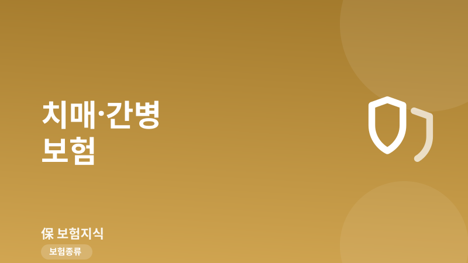
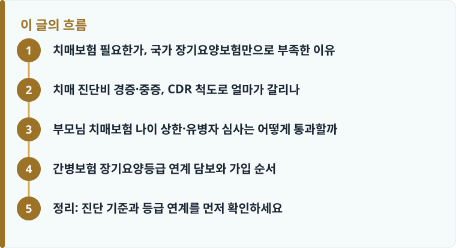

국가 장기요양보험은 요양비의 일부만 지원하고 본인부담과 생활비는 남으므로, 치매·간병보험은 그 공백을 메우는 목돈·정기 지급 수단입니다.
진단비는 CDR 척도(경도·중등도·중증), 간병비는 장기요양등급(1~5등급)으로 지급 조건이 나뉘므로 약관의 판정 기준을 봐야 합니다.
가입 후 1~2년 감액과 90일 면책, 부모님 대상 가입 나이 상한과 유병자 심사 조건을 미리 확인해야 실제 도움이 됩니다.
치매보험 필요한가, 국가 장기요양보험만으로 부족한 이유
치매·간병보험이 정말 필요한지 판단하려면 먼저 국가 장기요양보험이 어디까지 책임지는지를 봐야 합니다. 노인장기요양보험은 65세 이상(또는 노인성 질병이 있는 그 이하 연령)이 장기요양등급을 받으면 요양원·방문요양 비용의 상당 부분을 지원합니다. 다만 시설급여는 이용액의 약 20%, 재가급여는 약 15%를 본인이 부담해야 하고, 식대·간식비·상급 침실료 같은 비급여 항목은 지원 대상이 아닙니다. 등급을 받아도 매달 수십만 원의 실비 공백이 남는다는 뜻입니다.
여기에 더해 가족이 직접 간병하면 발생하는 소득 공백, 사설 간병인 비용까지 합치면 부담은 더 커집니다. 사적 치매·간병보험은 바로 이 지점, 즉 진단 시점의 목돈과 요양 기간의 정기 자금을 채우는 역할을 합니다. 실손이나 질병보험과 역할이 어떻게 다른지 헷갈린다면 질병·건강보험이 보장하는 범위와 한계를 함께 읽으면 정리가 쉽습니다.
치매 진단비 경증·중증, CDR 척도로 얼마가 갈리나
치매 진단비는 CDR(임상치매척도) 점수에 따라 지급 여부와 금액이 나뉩니다. CDR은 0.5부터 3까지 단계가 있는데, 보통 CDR 1은 경도(경증), CDR 2는 중등도, CDR 3은 중증 치매로 봅니다. 과거 상품은 CDR 3 중증만 보장해 실제로 받기 어렵다는 지적이 많았고, 최근에는 경도·중등도까지 세분화해 지급하는 담보가 늘었습니다. 그래서 '치매 진단비 경증 중증'이 각각 얼마인지, 어느 CDR 단계부터 얼마가 나오는지 약관에서 반드시 확인해야 합니다.
실제 유병 인구가 많은 쪽은 경도인지장애나 경증 치매이므로, 중증만 크게 보장하는 설계는 체감 도움이 적을 수 있습니다. 예를 들어 경도 300만 원·중등도 1,000만 원·중증 2,000만 원처럼 단계별로 나눠 지급하는 구조가 실질적입니다. 다만 치매 진단비도 가입 후 90일 면책과 1~2년 이내 진단 시 50% 감액이 적용되는 상품이 많으므로, 지급을 가르는 조건은 면책기간과 감액 비율이 보험금을 어떻게 줄이는지를 함께 확인하는 것이 안전합니다.

부모님 치매보험 나이 상한·유병자 심사는 어떻게 통과할까
부모님을 대상으로 치매·간병보험을 알아보면 가장 먼저 부딪히는 벽이 가입 나이 상한과 건강 심사입니다. 일반 치매보험은 보통 만 70~75세까지 가입을 받고, 이미 고혈압·당뇨 같은 만성질환이 있으면 표준 심사에서 거절될 수 있습니다. 이때 활용하는 것이 고지 항목을 줄인 간편심사(유병자) 상품으로, 최근 3개월 이내 입원·수술 권유, 2년 내 입원·수술, 5년 내 암 진단 정도만 묻는 방식이 대표적입니다.
다만 간편심사는 가입 문턱이 낮은 대신 보험료가 더 비싸고 감액 기간이 길게 붙는 경우가 많습니다. 이미 경도인지장애 진단 이력이 있으면 치매 담보 자체가 부담보로 빠지거나 인수가 거절될 수 있으니, 가입은 인지 저하가 나타나기 전에 서두르는 편이 유리합니다. 부모님 보장을 전체적으로 점검하는 방법은 부모님 보험을 나이와 병력에 맞게 점검하는 순서와 블로그의 고령 부모님 의료비 보장을 준비하는 실전 사례를 함께 보면 도움이 됩니다.
작성·검수 기준
이 글은 특정 보험사 상품을 권유하기 위한 것이 아니라, 치매·간병보험을 검토할 때 알아야 할 CDR 척도, 장기요양등급 연계, 유병자 심사 같은 일반 기준을 설명하기 위해 작성했습니다. 진단비 지급 단계, 감액·면책 조건, 간병비 지급 방식은 가입 시점의 약관과 개별 상품에 따라 달라질 수 있습니다.
정확한 보장 범위는 본인·부모님 증권의 약관과 상품설명서, 그리고 가입 전에 짚어야 할 보장 항목 체크리스트를 함께 확인하는 것이 가장 정확합니다.
간병보험 장기요양등급 연계 담보와 가입 순서
간병보험의 핵심 담보는 장기요양등급 판정과 연계됩니다. 노인장기요양보험은 심신 상태를 점수화해 1등급(가장 중증)부터 5등급, 인지지원등급까지 나누는데, 사적 간병보험은 이 등급을 지급 기준으로 그대로 가져다 씁니다. 흔히 1~2등급 판정 시 간병 목돈을 주거나, 등급별로 매달 정기 간병비를 지급하는 구조입니다. 문제는 상품마다 1~2등급만 보장하는지, 1~5등급 전체를 보장하는지 차이가 커서 '간병보험 장기요양등급' 보장 범위를 반드시 대조해야 한다는 점입니다.
진단비가 목돈이라면 간병비는 요양이 길어질수록 힘을 발휘하는 정기 자금입니다. 두 담보를 어떻게 조합할지 순서를 잡아 보면 다음과 같습니다.
- 부모님 나이와 병력을 확인해 표준심사와 간편심사 중 가능한 쪽을 먼저 정합니다.
- 치매 진단비가 경도(CDR 1)부터 지급되는지, 중증만 보장하는지 약관에서 확인합니다.
- 간병비 담보가 장기요양 1~2등급만인지 1~5등급까지 포함하는지 대조합니다.
- 면책 90일과 감액 기간, 감액 비율을 확인해 실제 지급 시점을 계산합니다.
- 보험료와 갱신 여부, 납입 기간을 비교해 부모님 소득 상황에 맞춰 최종 결정합니다.
정리: 진단 기준과 등급 연계를 먼저 확인하세요
치매·간병보험이 필요한지에 대한 답은 '국가 장기요양보험만으로는 본인부담과 생활 공백이 남는다'는 데 있습니다. 다만 금액보다 중요한 것은 치매 진단비가 어느 CDR 단계부터 지급되는지, 간병비가 어느 장기요양등급까지 연계되는지, 그리고 부모님이 나이·병력 심사를 통과할 수 있는지입니다. 이 세 가지를 먼저 확인하면 가입 후 '중증만 보장돼 못 받았다'는 실망을 줄일 수 있습니다.
다른 보험 정보 글이 궁금하다면 보험지식 블로그에서 이어 읽어 보세요. 가입 전에는 반드시 약관과 상품설명서를 확인하는 것이 가장 안전한 방법입니다.